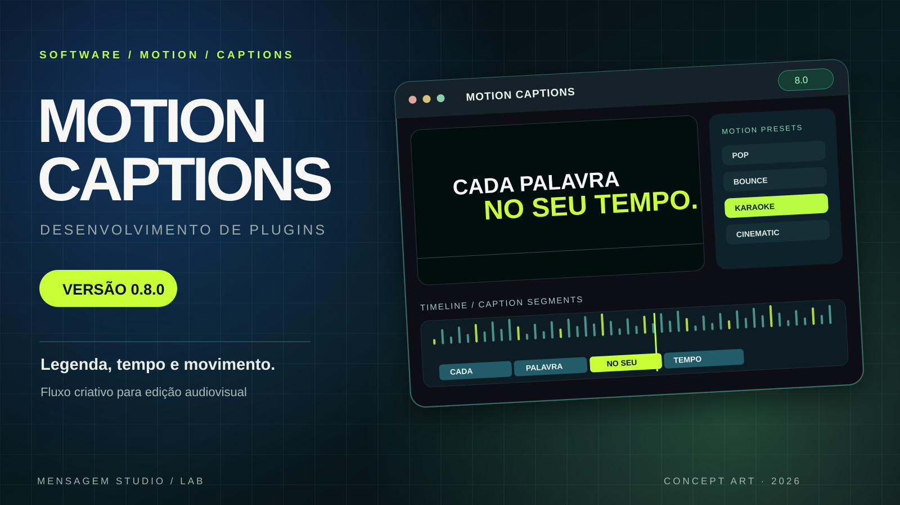
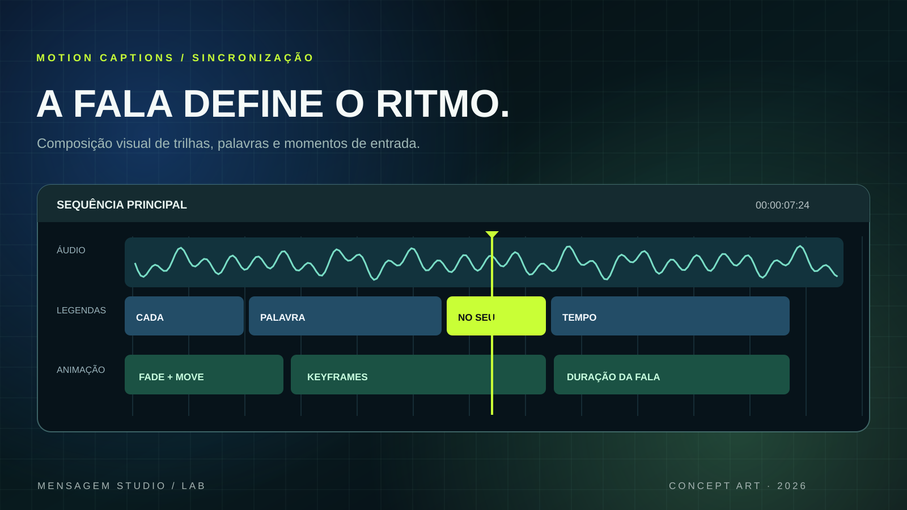
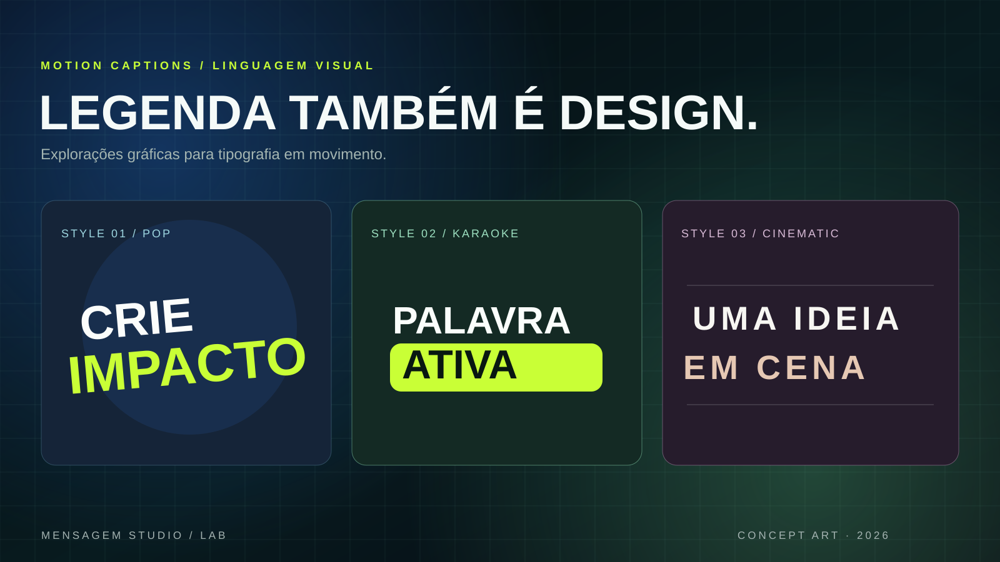

Tempo da fala
Projetar legendas que respeitem o momento e a duração de cada parte da narração.
Ferramentas criativas desenvolvidas para aproximar software, edição e motion design. Apresentamos o Motion Captions 0.8.0, nosso projeto de plugin de legendas animadas para produção audiovisual.

O Motion Captions nasce de um desafio real da pós-produção: fazer texto, fala e movimento trabalharem juntos. A proposta explora sincronização, animação tipográfica e organização de elementos na linha do tempo para pensar uma experiência de edição mais fluida.
Três artes originais apresentam a identidade do Motion Captions, o ritmo da timeline e estudos visuais de legendas.
Apresentação visual da ferramenta e de seu universo de edição criativa.

Estudo de organização temporal de falas, segmentos de texto e animações.

Experimentação gráfica de tipografia expressiva no audiovisual.
As artes desta página são representações conceituais, não capturas da interface final nem comprovação de funcionalidades concluídas.
O trabalho envolve definição do fluxo, desenho de interface e exploração de motion para transformar uma tarefa repetitiva em um processo criativo.
Projetar legendas que respeitem o momento e a duração de cada parte da narração.
Estruturar segmentos de texto e sua relação com trilhas, keyframes e sequência da edição.
Explorar estilos tipográficos que se integrem ao conteúdo e mantenham a legibilidade.
Disponibilizamos gratuitamente o instalador da suite Motion Captions 0.8.0 para Windows, com extensão de legendas e animações para Adobe After Effects.
Inclui o instalador, os arquivos da extensão, documentação e relatório de testes. O pacote oferece modos Palavra, Frase e Revelar e ferramentas de animação tipográfica. A versão 0.8.0 foi validada no After Effects 2026, conforme documentação incluída.
INSTALAR.bat.Compatibilidade: o instalador contém uma variante para Premiere Pro 0.7.4, desmarcada por padrão e não homologada neste pacote. A transcrição local com Whisper/FFmpeg/Silero também não foi revalidada na versão 0.8.0. Consulte os arquivos README.md e VALIDACAO_0.8.0.md dentro do ZIP antes de instalar.
Integridade SHA-256: ac474cca38342083d47a520e9b90dc6bde55126eaa0314fcbf88aa3b39d69cae
Conheça nossos serviços de design, vídeo, motion e experiências web ou explore mais trabalhos do estúdio.